Ядерные организмы. Растения
Растения, животные и грибы устроены по-разному. Среди них есть одноклеточные и многоклеточные, автотрофы и гетеротрофы. Но у всех есть общий признак — ядро в клетках. Поэтому их относят к надцарству Ядерные, или эукариоты (§12).
На Земле больше 300 тысяч видов растений (рис. 60). Они растут везде: в пустынях и на болотах, высоко в горах и в глубоких ущельях, летом — даже в ледяных пустынях Арктики и Антарктики. Растения бывают одноклеточными, колониальными (из одинаковых соединённых клеток) и многоклеточными.
У клеток растений есть оболочка (клеточная стенка), в которой есть целлюлоза, и пластиды в цитоплазме. Пластиды бывают бесцветные, зелёные, жёлтые, оранжевые. Зелёные — это хлоропласты (от греч. хлорос — зеленоватый и пластос — вылепленный). В них есть зелёный пигмент хлорофилл (хлорос и филлон — лист). Он ловит солнечные лучи, и их энергия идёт на фотосинтез — создание органических веществ из воды и углекислого газа.
При фотосинтезе растения поглощают углекислый газ и выделяют кислород. Они живут за счёт веществ, которые делают сами, — это автотрофы. Главный признак царства Растения — способность к фотосинтезу.
Общая характеристика ядерных организмов, или эукариот. Растения, животные и грибы имеют разное строение. Среди них есть одноклеточные и многоклеточные организмы. По типу питания они могут быть автотрофами или гетеротрофами. Они относятся к разным царствам организмов, но у них есть общий признак — наличие ядра в клетках. Поэтому их относят к Надцарству Ядерные, или эукариоты.
Характеристика растений. На нашей планете насчитывается более 300 тыс. видов растений (рис. 60). Они населяют поверхность суши и водные пространства. Растут они в безводных пустынях и на топких болотах, высоко в горах и в глубоких ущельях. Их можно найти в тёплое время года даже в ледяных пустынях Арктики и Антарктики. Растения бывают одноклеточными, состоящими только из одной клетки, колониальными, образованными одинаковыми, соединёнными между собой клетками, и многоклеточными.
Для клеток растений характерно наличие оболочки (клеточной стенки), в состав которой входит целлюлоза, и присутствие в цитоплазме пластид. Пластиды могут быть разного цвета: бесцветные, зелёные, жёлтые или оранжевые. Зелёные пластиды — хлоропласты (от греч. хлорос — зеленоватый и пластос — вылепленный, созданный). В них содержится зелёный пигмент хлорофилл (от греч. хлорос и филлон — лист). Он улавливает солнечные лучи и обеспечивает использование их энергии на осуществление фотосинтеза — процесса образования сложных органических соединений из неорганических (воды и углекислого газа) за счёт энергии света.
В ходе фотосинтеза растения выделяют кислород и поглощают углекислый газ. Растения поддерживают свою жизнедеятельность за счёт органических веществ, которые образуют сами, т. е. являются автотрофами. Таким образом, важнейшим характерным признаком представителей царства Растения является их способность к фотосинтезу.
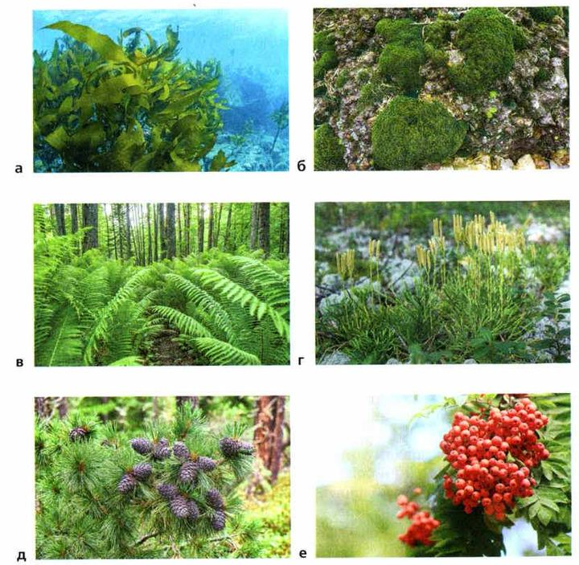
1. Что общего у растений, животных и грибов?
2. Что делает хлорофилл?
3. Какой признак — самый главный для царства Растения?
Роль растений в природе и жизни человека
Растения используют энергию Солнца и делают органические вещества из воды и углекислого газа. При этом они наполняют воздух кислородом, которым дышит большинство живых организмов, и забирают из воздуха углекислый газ. Растения едят растительноядные животные, а ими питаются хищники.
Без растений невозможно представить нашу жизнь. Они дают нам еду, сырьё для промышленности (пищевой, текстильной, бумажной, химической), лекарства, строительный материал и топливо. Человек выращивает культурные растения: злаковые, плодово-ягодные, лекарственные, кормовые и технические (рис. 61).
Чтобы получать хорошие урожаи, нужно знать, как живут растения, какие бывают сорта, как ухаживать за почвой. Учёные выводят новые сорта — урожайные и устойчивые к болезням.
Человек использует и дикие растения — лесные, луговые, болотные. Особенно важны лекарственные (рис. 62): примерно половина лекарств — растительного происхождения. Но есть растения ядовитые или вызывающие аллергию (рис. 63).
Многие виды уже исчезли, другим грозит вымирание. Больше 500 видов растений занесены в Красную книгу России (рис. 64). Сохранить условия для жизни растений — одна из главных задач человечества.
Роль растений в природе и жизни человека. Роль растений в природе связана с их способностью использовать солнечную энергию и создавать органические вещества из неорганических (воды и углекислого газа). При этом они обогащают воздух кислородом, необходимым для дыхания большинства живых организмов, и поглощают из воздуха углекислый газ. Растения служат пищей растительноядным животным, которыми, в свою очередь, питаются хищники.
Невозможно представить себе нашу жизнь без растений. Человек использует растения и как источник питания, и как сырьё для разных отраслей промышленности (пищевой, текстильной, бумажной, химической), и для приготовления лекарств, и как строительный материал и топливо. Человек выращивает злаковые, плодово-ягодные, лекарственные, кормовые и технические культуры (рис. 61).
Развитие земледелия потребовало новых знаний о жизнедеятельности растений, о свойствах различных культур и их сортов, о том, как следует обрабатывать почву и ухаживать за ней, чтобы получить хорошие урожаи, и т. п. Чтобы обеспечить население достаточным количеством разнообразных пищевых продуктов, учёные выводят новые высокоурожайные и устойчивые к болезням сорта культурных растений. Человек для своих нужд использует и многие дикорастущие растения — лесные, луговые, болотные и др. Среди дикорастущих растений особое место занимают лекарственные (рис. 62).
Примерно половина из используемых человеком лекарств имеет растительное происхождение. Однако среди растений есть и опасные для здоровья человека ядовитые растения или вызывающие у него аллергические реакции (рис. 63).
Вы знаете, что без растений жизнь на нашей планете невозможна. Многие виды живых организмов уже исчезли с лица земли, другим угрожает вымирание. Более 500 видов растений, нуждающихся в охране, занесены в Красную книгу Российской Федерации (рис. 64). Сохранить, а во многих регионах Земли воссоздать благоприятные для жизни растений природные условия — одна из главных задач человечества, а для рациональной хозяйственной деятельности необходимы биологические знания.
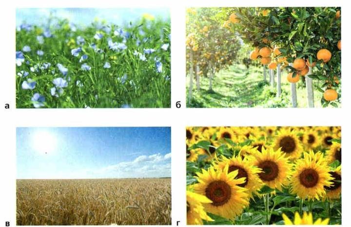
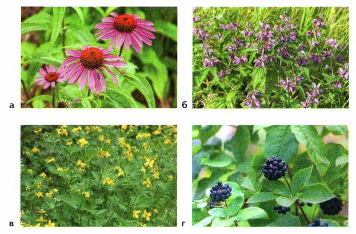
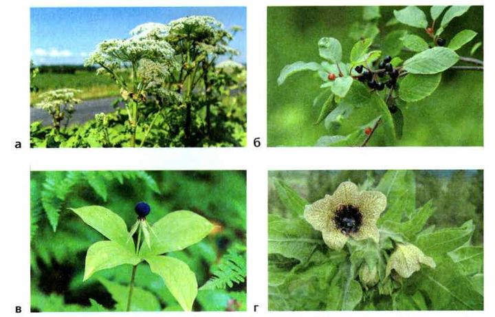
▲ Запомни, как выглядит вороний глаз: одна тёмная ягода посреди четырёх листьев.
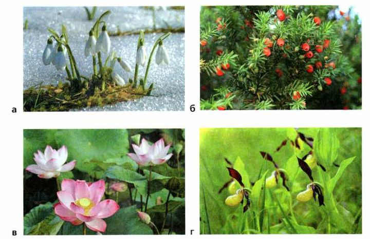
4. Почему без растений не могут жить животные?
5. Для чего человек использует растения? Назови не меньше трёх примеров.
6. Какая доля лекарств сделана из растений?
Животные
В царстве Животные около 2 миллионов видов. Они живут на суше, в воде и в почве.
Животные очень разные, но у всех есть общие признаки. В их клетках есть ядро (это эукариоты), но нет оболочки — клеточной стенки, как у бактерий, растений и грибов (§10). Животные питаются готовыми органическими веществами — это гетеротрофы.
Животных отличает от других организмов способность передвигаться: они ползают, прыгают, бегают, летают и плавают. Хотя есть и малоподвижные — например, коралловые полипы всю жизнь сидят на месте.
Животных делят на простейших (одноклеточных) и многоклеточных. Простейшее состоит из одной клетки (или нескольких одинаковых), и эта клетка — самостоятельный организм. Простейшие живут в морской и пресной воде, во влажной почве и в других организмах (рис. 65).
Тело многоклеточных состоит из множества клеток, разных по строению и работе. Многоклеточных делят на две группы:
беспозвоночные — без внутреннего скелета: кишечнополостные, черви, моллюски, ракообразные, насекомые (рис. 66). Это примерно 95% всех видов животных!
позвоночные — с внутренним осевым скелетом, позвоночником (отсюда название): рыбы, земноводные, пресмыкающиеся, птицы, млекопитающие (рис. 67).
Только у многоклеточных животных есть сложные системы органов: опорно-двигательная, выделительная, кровеносная, дыхательная, нервная и другие. Форма тела животного подходит к его образу жизни и среде (рис. 68). И на изменения вокруг животные реагируют активнее всех.
Характеристика животных. Царство Животные насчитывает около 2 млн видов. Они живут на суше, в воде и почве.
Несмотря на различия во внешнем и внутреннем строении, размерах и образе жизни, все животные имеют общие признаки. В клетках животных есть ядро, т. е. они относятся к эукариотам, но отсутствует оболочка (клеточная стенка), которая характерна для клеток бактерий, растений и грибов.
Животные, в отличие от растений, питаются готовыми органическими веществами, т. е. являются гетеротрофами. Способность животных к передвижению в пространстве отличает их от других организмов. Большинство животных активно передвигается: ползает, прыгает, бегает, летает и плавает. В то же время среди них есть и малоподвижные виды, ведущие прикреплённый образ жизни, например коралловые полипы.
Животных принято делить на простейших, или одноклеточных, и многоклеточных. К группе Простейшие относят животных, состоящих из одной или нескольких клеток. Такая клетка — самостоятельный организм, даже если клетки объединены в группу или колонию. Обитают одноклеточные животные в морской и пресной воде, влажной почве, а также в других организмах. Внешне они очень разнообразны (рис. 65).
В группу Многоклеточные объединяют животных, тело которых состоит из множества клеток, различных как по строению, так и по выполняемым функциям. Многоклеточных животных обычно делят на две группы — беспозвоночные и позвоночные животные.
Беспозвоночные — многочисленная группа животных, не имеющих внутреннего скелета. Беспозвоночные составляют примерно 95% всех видов современных животных. К ним относят кишечнополостных, червей, моллюсков, ракообразных, насекомых и некоторые другие группы животных (рис. 66).
Позвоночные — это группа животных, имеющих внутренний осевой скелет — позвоночник, чем и объясняется их название. К позвоночным животным относят рыб, земноводных, пресмыкающихся, птиц, млекопитающих (рис. 67).
У многоклеточных животных есть сложные системы органов, которых нет у других живых организмов. Это опорно-двигательная, выделительная, кровеносная, дыхательная, половая, нервная системы и др. Форма и строение тела животных соответствуют их образу жизни и среде обитания (рис. 68). Животные активнее других организмов реагируют на изменяющиеся условия окружающей среды.
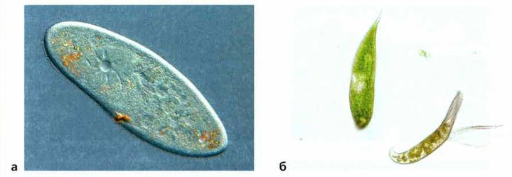
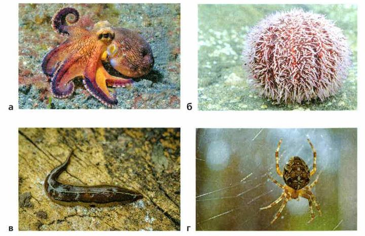
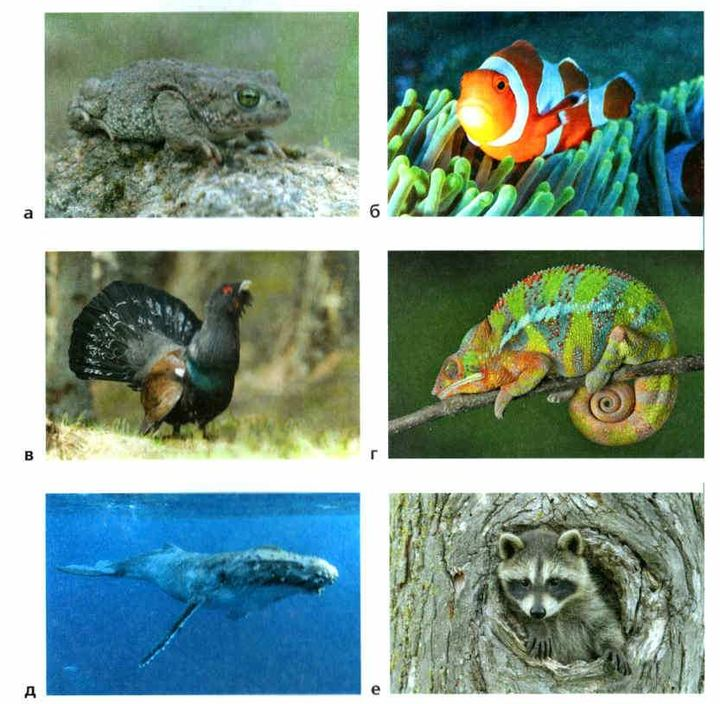
▲ Распредели их по пяти группам позвоночных.
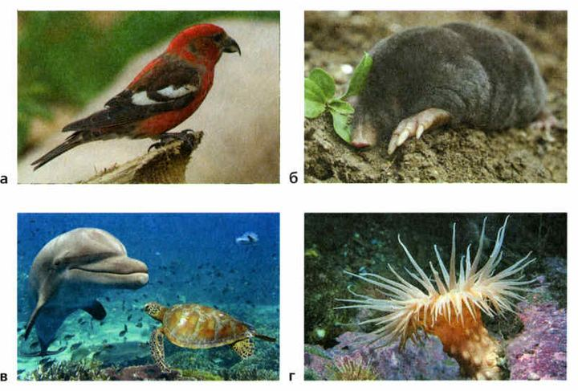
7. Чем клетки животных отличаются от клеток растений?
8. Какая способность отличает животных от других организмов?
9. Каких животных называют позвоночными? Назови пять групп.
Роль животных в природе и жизни человека
Животные — важная часть природы. Они поедают отмершие остатки растений и других организмов и так участвуют в круговороте веществ, помогают образовываться почве и делают её плодороднее. Животные опыляют растения и разносят их семена. Многие водные животные очищают воду, поедая разлагающиеся остатки.
Человек разводит сельскохозяйственных животных и добывает диких — особенно морских: моллюсков, креветок, рыб.
Но есть и вредители: они уничтожают урожай, продукты, изделия из кожи, шерсти, дерева. Паразиты-простейшие вредят пчеловодству, рыбоводству, животноводству. Многие болезни человека вызывают животные (например, малярию, чесотку), а некоторые переносят заразные болезни (чуму, тиф). Опасны и ядовитые животные — змеи, скорпионы, пауки (рис. 69).
Разнообразие животных всё время уменьшается. Главная причина — деятельность человека: вырубая леса, распахивая степи, осушая болота, человек разрушает их дом. Только когда многие виды исчезли совсем, люди поняли, что животных надо защищать. Многие из них занесены в Красную книгу России (рис. 70).
Роль животных в природе и жизни человека. Животные являются важной частью природных сообществ. Они участвуют в круговороте веществ, поедая отмершие остатки растений и других организмов, способствуют образованию почвы и повышению её плодородия. Животные являются опылителями многих растений и участвуют в распространении их семян. Многие водные животные способствуют очищению воды, улавливая и поедая разлагающиеся остатки организмов. Человек получает продукты питания, выращивая сельскохозяйственных животных, а также ведя промысел животных в дикой природе. Особенно большое значение имеет промысел морских животных (моллюсков, креветок, рыб).
В то же время некоторые животные вредят человеку, уничтожая культурные растения, продукты, изделия из кожи, шерсти, дерева. Паразитические простейшие наносят большой вред пчеловодству, рыбоводству, животноводству и звероводству. Многие болезни человека также вызываются животными, например амёбная дизентерия, сонная болезнь, малярия, гельминтозы, чесотка и др. Животные являются переносчиками возбудителей ряда инфекционных заболеваний (чума, тиф и др.). Представляют опасность для человека и ядовитые животные (змеи, скорпионы, пауки и некоторые другие) (рис. 69).
Разнообразие животного мира в последнее время неуклонно снижается. Основной причиной исчезновения многих видов животных является деятельность человека. Вырубая леса, распахивая степи, осушая болота, человек разрушает места обитания животных, и в результате их численность уменьшается. Только после того как многие виды животных исчезли полностью, люди стали понимать, что животные, как и другие организмы, нуждаются в защите. Многие животные занесены в Красную книгу Российской Федерации (рис. 70).
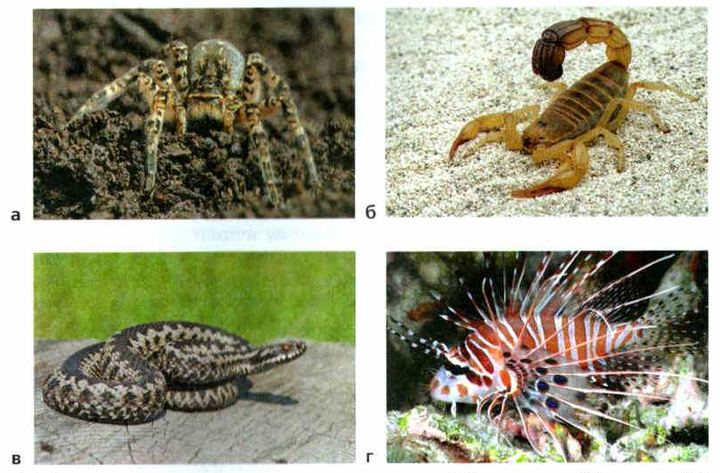
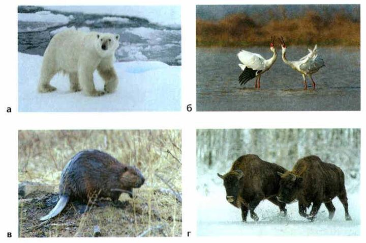
10. Как животные помогают растениям?
11. Какая главная причина исчезновения многих видов животных?
Грибы
Грибы — большая группа: около 100 тысяч видов. Они бывают разной формы и размера, одноклеточные и многоклеточные.
У грибов есть признаки и растений, и животных. Как растения, они всасывают вещества из окружающей среды. Но, как животные, они гетеротрофы — питаются готовым. Поэтому грибы выделили в отдельное царство.
Ты знаешь шляпочные грибы — белый, подберёзовик, подосиновик, мухомор. Но и плесень на продуктах — тоже гриб! А дрожжи — одноклеточные грибы: с ними пекут хлеб и делают напитки, например кефир. Вредители посевов головня и спорынья — тоже грибы.
Большинство грибов питаются продуктами жизнедеятельности организмов и их мёртвыми остатками. Но есть и такие, что живут на живых растениях, животных и человеке и вызывают болезни — например, грибковые болезни кожи и ногтей. Их лечат долго.
Самые ценные съедобные грибы — белые и рыжики. Ещё часто собирают подберёзовики, подосиновики, маслята, лисички, моховики, сыроежки, опята (рис. 71). Есть условно-съедобные — их можно есть только после особой обработки: сморчки, строчки, волнушки, грузди, рядовки.
Есть только свежие молодые грибы. В старых и начавших портиться грибах появляются ядовитые вещества. Нельзя собирать грибы у дорог, железных дорог и заводов: грибы впитывают вредные вещества, и даже съедобные становятся опасными.
Есть грибы несъедобные и ядовитые (рис. 72). Самый опасный — бледная поганка: человек, который ею отравился, как правило, умирает. Красный мухомор менее ядовит, но тоже вызывает сильные отравления. Ядовиты и другие мухоморы — вонючий и пантерный.
Некоторые ядовитые грибы похожи на съедобные: сатанинский гриб — на белый, бледная поганка — на шампиньон, ложные опята — на опята, ложные лисички — на лисички. Поэтому твёрдое правило: не уверен, что гриб съедобный, — не бери. Если после грибов стало плохо — тошнота, рвота, боль в животе, — сразу вызывают скорую помощь.
Характеристика грибов. Грибы — обширная группа организмов, включающая около 100 тыс. видов. Они различаются по форме и размерам, строению и образу жизни, могут состоять из одной клетки и быть многоклеточными.
Грибы совмещают в себе некоторые признаки растений и животных. Они, как и растения, всасывают вещества из окружающей среды, но при этом являются гетеротрофами, как животные, поэтому их выделили в самостоятельное царство Грибы.
Вам хорошо известны шляпочные грибы (белый, подберёзовик, подосиновик, мухомор и др.), плесень, появляющаяся на продуктах, — тоже грибы. К одноклеточным грибам относятся дрожжи, используемые при выпечке хлебобулочных изделий и приготовлении различных напитков, например кефира. Вредители сельскохозяйственных посевов головня и спорынья — тоже грибы.
Мы обычно сталкиваемся с грибами, живущими на суше, но есть грибы, обитающие в воде. Большинство грибов питаются продуктами жизнедеятельности организмов и их мёртвыми остатками. Среди грибов есть и такие, которые питаются органическими веществами живых организмов. Поселяясь на телах растений, животных и человека, они вызывают различные заболевания. Примером могут служить грибковые поражения кожи и ногтей человека, требующие специального, иногда очень длительного лечения.
В повседневной жизни грибами мы называем шляпочные грибы, которые собираем для употребления в пищу. Наиболее ценными в пищевом отношении являются белые грибы и рыжики. Среди прочих съедобных грибов наиболее распространены подберёзовики, подосиновики, маслята, лисички, моховики, сыроежки, опята (рис. 71).
Выделяют также условно-съедобные грибы, которые можно употреблять в пищу только после специальной обработки. К ним относят сморчки, строчки, волнушки, грузди, рядовки и др. В пищу следует употреблять только свежие молодые грибы. Их можно жарить, варить, солить, мариновать. Грибы могут долго храниться в сушёном виде. Вы должны всегда помнить, что в старых и начавших разлагаться грибах образуются ядовитые вещества, которые могут стать причиной серьёзного отравления, вызвать расстройство органов пищеварения, нервной системы и нарушение кровообращения.
Нельзя собирать грибы вдоль автомагистралей, железных дорог, вблизи промышленных предприятий. Как правило, эти районы загрязнены вредными для человека веществами. Грибы активно всасывают и накапливают их, поэтому даже съедобные грибы становятся опасными.
Не все грибы можно употреблять в пищу. Есть грибы несъедобные и даже ядовитые (рис. 72). Наиболее опасной является бледная поганка. Человек, отравившийся бледной поганкой, как правило, умирает. Мухомор красный, широко распространённый в наших лесах, менее ядовит, чем бледная поганка. Хотя случаи смерти от употребления в пищу этого гриба редки, красный мухомор тоже вызывает сильные отравления. Ядовитыми считаются и другие виды мухоморов, например вонючий и пантерный.
Некоторые несъедобные и даже ядовитые грибы похожи на съедобные. Так, сатанинский гриб похож на белый, бледная поганка — на шампиньон, ложные опята — на опята, ложные лисички — на лисички съедобные. При сборе грибов необходимо соблюдать твёрдое правило: если не уверен в том, что этот гриб съедобен, брать его нельзя. При первых симптомах отравления грибами — недомогании, тошноте, приступах рвоты, боли в животе — необходимо немедленно вызвать бригаду скорой помощи или отвезти пострадавшего к врачу.
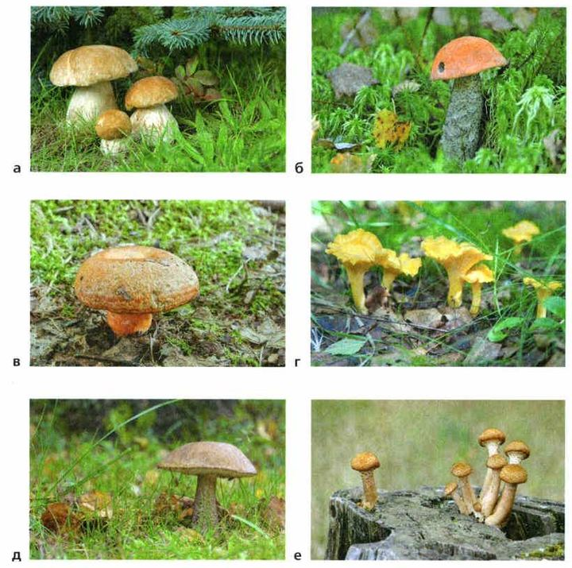
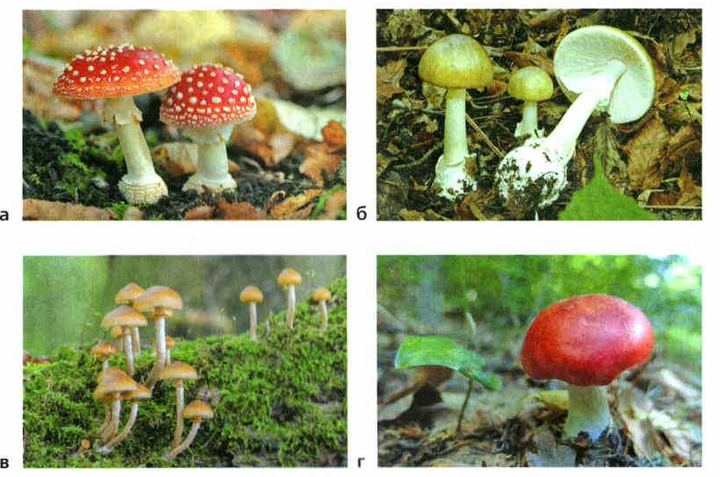
▲ Бледная поганка — самый опасный гриб. Посмотри на неё внимательно.
пластинки снизу быстро темнеют: розовые, потом коричневые
пластинки всегда белые, внизу ножки утолщение в «мешочке»
Белые пластинки у «шампиньона» — не бери! Это правило из учебника.
12. Почему грибы выделили в отдельное царство?
13. Почему нельзя собирать грибы вдоль дорог и у заводов?
14. Какой гриб самый опасный?
Роль грибов в природе и жизни человека
Грибы разрушают остатки растений и животных — и так участвуют в круговороте веществ в природе.
Съедобные грибы полезны, их едят многие животные и человек. Без грибов не испечь хлеб, не сделать кефир, кумыс, сыр. Из некоторых грибов получают ценные лекарства.
Но грибы и вредят. Одни вызывают болезни у растений, животных и человека — грибковые болезни кожи, ногтей, волос. Ими заражаются от больных людей или через вещи, на которых остались чешуйки кожи со спорами гриба. Другие грибы портят продукты, разрушают древесину и постройки.
Роль грибов в природе и жизни человека. Грибы, разрушая остатки растений и животных, участвуют в круговороте веществ в природе.
Съедобные грибы содержат полезные вещества, поэтому их употребляют в пищу многие животные и человек. Грибы необходимы при изготовлении хлеба, кефира, кумыса, сыров, вина, пива и т. д. Из некоторых грибов получают ценные лекарства.
Грибы могут наносить и большой вред. Некоторые из них вызывают болезни у растений, животных и человека. Грибы-паразиты вызывают различные заболевания кожи, ногтей, волос. Заражение грибковыми болезнями происходит при контакте больных людей со здоровыми или через предметы, загрязнённые чешуйками кожи, ногтей, волос, содержащими споры грибка. Грибы, поселяясь на продуктах, делают их непригодными для питания, разрушают древесину и постройки.
15. Какую роль грибы играют в природе?
16. Для приготовления каких продуктов нужны грибы?
Итоги и «Моя лаборатория»
Растения · Хлоропласты · Хлорофилл · Фотосинтез · Животные · Простейшие, или одноклеточные · Многоклеточные · Беспозвоночные животные · Позвоночные животные · Грибы · Шляпочные грибы · Грибы съедобные и ядовитые
- Какое значение имеют растения в природе и жизни человека?
- Почему каждому человеку необходимы знания о жизни растений?
- Каких животных относят к простейшим, или одноклеточным?
- Какие функции выполняет клетка одноклеточного животного?
- Каких животных называют беспозвоночными?
- Каких животных называют позвоночными?
- Каковы общие признаки грибов?
- Как питаются грибы?
- Какие съедобные и ядовитые грибы вы знаете?
- Какую роль играют грибы в природе и жизни человека?
Возможна ли жизнь на нашей планете без растений?
- По материалу параграфа и дополнительным источникам подготовьте (по согласованию с учителем) сообщение и презентацию «Многообразие растений (животных, грибов) и их значение в природе и жизни человека». Выступите с сообщением в классе и обсудите его.
- Познакомьтесь с основными правилами сбора грибов и строго их соблюдайте.
- Собирайте только те грибы, о которых точно знаете, что они съедобны.
- Никогда не ешьте и не пробуйте грибы, в съедобности которых не уверены.
- Никогда не собирайте, не ешьте и не пробуйте на вкус грибы с клубневидным утолщением у основания ножки, окружённым оболочкой (как у красного мухомора), — это признак ядовитых грибов.
- Не собирайте и не ешьте перезревшие, червивые и испорченные грибы.
- У шампиньонов смотрите на цвет пластинок. Никогда не ешьте «шампиньоны» с белыми пластинками: у настоящих пластинки быстро темнеют, а у смертельно ядовитой бледной поганки, похожей на шампиньон, они всегда белые.
- Собирайте грибы в плетёные корзины или вёдра, но не в полиэтиленовые пакеты — в них грибы быстро портятся.
- Дома переберите грибы, ещё раз внимательно осмотрите каждый, почистите и отварите.
- Используйте грибы сразу после сбора: сырыми их нельзя долго хранить.
- Не выдёргивайте гриб, а срежьте ножом или аккуратно выкрутите, чтобы не повредить грибницу. Ямку присыпьте мхом или подстилкой — иначе на этом месте грибы могут больше не вырасти.
Сначала сделай опыт и запиши, что увидела.
Учёные выяснили, что грибница некоторых грибов может расти со скоростью 5 мм в минуту. Считается, что это самый быстрый рост среди живых организмов. Подсчитайте, насколько может вырасти грибница за сутки.
Проверь себя
Ошиблась — не страшно, попробуй другую кнопку.
Кабачок из Ягодного
Делает пищу на свету.
Плесень на хлебе
Плесень — это гриб.
Лягушка
Земноводное.
Дрожжи для пиццы
Одноклеточные грибы.
Инфузория туфелька
Простейшее животное.
Лисичка
Шляпочный гриб.
Муравей
Насекомое — нет позвоночника.
Змея
Пресмыкающееся с позвоночником.
Дождевой червь
Червь.
Голубь
Птица.
Осьминог
Моллюск.
Люся
Млекопитающее.
Белый гриб
Один из самых ценных.
Мухомор
Сильные отравления.
Лисичка
Но есть ложные лисички!
Бледная поганка
Самый опасный гриб.
1. Какой главный признак царства Растения?
2. Чего нет в клетках животных?
3. Лягушка — это…
4. Какая доля видов животных — беспозвоночные?
5. Почему грибы — отдельное царство?
6. Что делать, если не уверена, съедобный ли гриб?
Расскажи вслух
Растения и их значение
- Больше 300 тысяч видов; в клетках оболочка и пластиды, хлоропласты с хлорофиллом.
- Главный признак — фотосинтез: дают кислород и органические вещества.
- Человек выращивает культурные растения, использует лекарственные; есть ядовитые; редкие — в Красной книге.
Животные
- Около 2 миллионов видов; гетеротрофы, в клетках нет оболочки, умеют передвигаться.
- Простейшие (одноклеточные) и многоклеточные; беспозвоночные (95%) и позвоночные (5 групп).
- Опыляют растения, очищают воду, дают пищу; есть вредители и ядовитые; многие под охраной.
Грибы
- Около 100 тысяч видов; всасывают пищу, но гетеротрофы — отдельное царство.
- Шляпочные грибы, плесень, дрожжи; съедобные, условно-съедобные и ядовитые (бледная поганка).
- Участвуют в круговороте веществ, нужны для хлеба и кефира; вызывают болезни и портят продукты.